Ýngilizce'de "Investment Casting",
"Ceramic Shell Casting" (seramik kabuk dökümü)
veya "lost wax process" (kaybedilmiþ mum prosesi),
Almanca'da "Feinguss" veya
"Schalenguss", Fransýzca'da ise "Fonde a Cire
Perdue" ismiyle anýlan hassas döküm tekniðinin
2000 yýllýk bir geçmiþi vardýr. Bu teknik sayesinde elde
uygun malzemeden yapýlmýþ bir model olduðu sürece çok
karmaþýk metal dökümler yüksek hassasiyet ve yüzey kalitesi
ile yapýlabilmektedir. Bu özelliði ile hassas döküm, birçok
talaþlý imalat iþleminin gereðini ortadan kaldýrýr.
Hassas döküm teknikleri temelde ikiye ayrýlýr: "Investment
Shell Casting" (hassas kabuk döküm)
tekniðinde, seramik kalýp, ince cidarlý bir kabuk þeklinde
modelin etrafýný örterken, "Investment Flask Casting"
(hassas fanus döküm) tekniðinde ise
bir kabýn içindeki kalýp boþluðu haricindeki tüm hacim
seramik/alçý malzeme ile doldurulur:
Bu cins döküm için yapýlan
iþlemleri kýsaca þöyle sýralayabiliriz:
Öncelikle, metalden
dökülmesi istenilen parçanýn mum veya benzeri bir malzemeden
modeli hazýrlanýr. Genellikle alüminyum (kuyumculukda
ise silikon) bir
kalýp imal edilir ve plastik enjeksiyon yöntemi ile
istenildiði kadar mum model elde edilir. (Döküm sonrasý
soðuma ve büzülme tahmini yapýlarak model aslýndan biraz
büyük imal edilebilir)
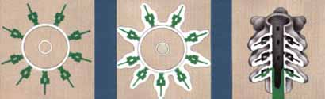
1
2
3
(1) Parçalar
yine mumdan yapýlmýþ bir gövdeye yapýþtýrýlarak "mum
salkým" hazýrlanýr. Mum malzeme, 70-90 °C arasýnda
olabilen düþük ergime sýcaklýðýna sahip ve seramik kabuðu
çatlatmamasý için düþük ýsýl genleþme özelliðine sahip
bir malzemedir. (2) Model, seramik banyosuna batýrýlarak (sulu
alçý görünümünde bir sývý) çevresine ince bir tabaka
kaplanmasý saðlanýr. Seramik tabaka kuruyup katýlaþýncaya
kadar bir fýrýnda bekletilir. Yeteri kalýnlýkta seramik
kaplanýncaya kadar son iki iþlem tekrarlanýr. Dýþ tabakalarda
daha kalýn seramik tozu kullanýlýr. (3) Dýþ cidarý sert seramik kaplý parça bir fýrýna
sokularak modelin eriyip dýþarý akmasý saðlanýr. Seramik
malzeme ise yüksek sýcaklýða dayanýklý olduðundan þeklini
muafaza eder. Bu esnada mum modelin akarak çýkmayan
kýsýmlarý da tamamiyle buharlaþýr. Ardýndan, fýrýn sýcaklýðý
yükseltilerek belli bir süre içinde seramik kabuk piþirilerek
sinterlenir ve sonraki döküm iþlemlerine dayanacak þekilde
mukavemetinin artmasý saðlanýr.
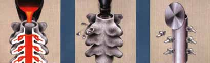
4
5
6
(4) Mum salkýmdan
kalan boþluða (daha önce býrakýlmýþ bulunan bir aðýzdan)
ergimiþ halde metal dökülür (5) Metal
soðuyup katýlaþtýktan sonra darbe ile dýþ cidardaki
seramik kýrýlarak parça ortaya çýkarýlýr. (6) Parçalar
ana gövdeden dairesel bir testere ile kesilerek alýnýr,
bir baþka deðiþle göbek baðlarý kesilir.
Ardýndan, gerekli çapak
alma, temizleme ve yüzey parlatma iþlemleri yapýlýr.
Son olarak ise kalite kontrol iþlemleri yapýlýr. Dökümde
tahmin edilemeyen boyutsal çekme veya çarpýlmalar varsa
bunu kompanse edecek þekilde mum modeller tekrar tasarlanýp
üretilebilir...
Modern bir hassas
kabuk döküm fabrikasý: (Shellcast
Inc., Montreal, Kanada)
1-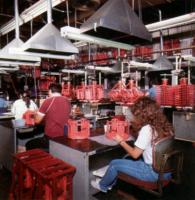
2-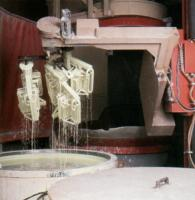
3-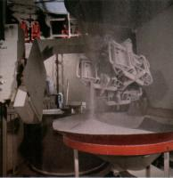
4-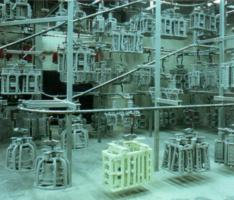
5-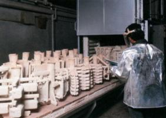
1- Mum model parçalarý
kontrolden geçirilip monte edilerek daha karmaþýk modeller
oluþturuluyor: Hassas döküm sektöründe sýkça karþýlaþýlan
karmaþýk mum modelleri bir seferde bir enjeksiyon kalýbýyla
üretmenin zorluðu veya imkansýzlýðý sebebiyle iki veya
daha fazla mum model parçasý ayrý enjeksiyon kalýplarýnda
imal edilir ve manuel olarak birleþtirilir.
2- Tam otomatik kabuk
üretim hattýnda robot yardýmýyla mum model üzerine ince
seramik kaplanýyor.
3- Kabuðu saðlamlaþtýrmak
için daha kalýn seramik (kum) kaplanýyor.
4- Kabuk oluþturma iþlemlerinin
ara safhalarýnda nem ve sýcaklýk kontrollü ortamda kabuklar
kurutulurken.
5- Seramik kabuklarýn
kür edildiði tünel fýrýn.
Askeri elektronik cihazlarýn
kasalarý ve jet türbin parçalarýndan örnekler içeren yukarýdaki
resimler hassas kabuk döküm ile imal edilen parçalarýn
nekadar karmaþýk olabileceðini gösteren güzel örneklerdir.
(ilk 4 resim: Shellcast Inc., Montreal,
Kanada, Son iki resim: Precision Castparts Corp., ABD)
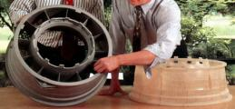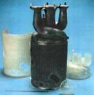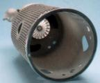
Solda, Büyük
boy bir jet motoru parçasý dökümü, SLA/Quickcast
modeli ile yan yana görülmekte (Precision
Castparts Corp., ABD) Ortada ve Saðdaki
resimde yine SLA/quickcast master modelleri ile
hassas dökümle üretilmiþ karmaþýk parçalar görülmekte
(Precision Castparts Corp., ABD)
1- Mum modeller
model aðacýna eritilerek yapýþtýrýlýr 2- Silindirik bir
gömlek (fanus) model aðacý etrafýna geçirilir.
3- Gömlek ile model
aðacý arasýndaki tüm boþuklara alçý/seramik karýþýmý dökülür.
4- Fýrýnda ýsýyla
karýþým kurutulur ve kalýp ters çevrilerek içindeki mum
modellerin eriyip akmasý saðlanýr. 5- Sýcak kalýp ergimiþ
metal ile doldurulur. Vakum veya merkezkaç kuvvetiyle
döküm kolaylaþtýrýlabilir. 6- Basýnçlý su büskürterek
kalýp malzemesi temizlenir. 7- Döküm aðacýndan
koparýlan parçalar malzeme giriþ çapaklarý temizlenerek
döküm sonrasý kullanýma hazýr hale getirilirler.
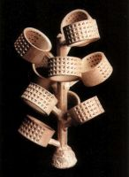
Saðda, 6. þekilde
gösterilen safhaya gelmiþ olan yüzük dökümlerinin bulunduðu
bir hassas döküm aðacý görülmektedir. (Meiko)
Mücevher imalatçýlarý
hassas fanus döküm tekniðini yaygýn ve etkili bir þekilde
kullanmaktadýrlar.
Otoinþa teknolojisindeki
geliþmelere paralel olarak (karmaþýk döküm modellerinin
daha kolay yapýlabilmesi sayesinde) hassas fanus döküm
teknolojisinin daha yaygýn kullanýmýna ihtiyaç olmuþ ve
bu ihtiyacý Alman MCP-HEK
GmbH firmasý geliþtirdiði, bir seri cihazdan oluþan
ve küçük bir atölye alanýna kolayca kurulabilecek "MCP
Metal Part Casting" isimli paket bir çözümle karþýlamýþtýr.
Aþaðýda, bu sistemin uygulamasýna ait bazý resimler ve
açýklamalar verilmiþtir:
Mum modeller havya ile
eritilerek yine mum malzemeden yapýlmýþ model aðacýna
baðlanýyor.
Fanus döküm aðacýnýn
çevresine yerleþtiriliyor
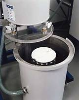
Fanus vakum altýnda seramik
(alçý) ile dolduruluyor
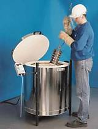
Fanus kurutma fýrýnýndan
çýkýyor. Fanus çevresindeki delikler seramik malzemenin
su buharý kaybetmesini kolaylaþtýrmaktadýr.
Mum eritme ve metal döküm
sonrasý fanus çýkartýlýyor
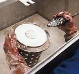
Basýnçlý su ile seramik
temizleniyor. Fanus çevresindeki delikler bu sefer de
su ile seramik (alçý) dolgunun eritilmesini kolaylaþtýrmaktadýr.
Temizlik esnasýnda çevreye su ve diðer artýklar sýçramamasý
için bu iþlem özel bir kabinin içinde yapýlýr.
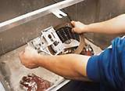
Basýnçlý su ile seramik
temizlenmiþ
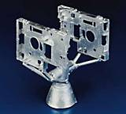
Metal dökülmüþ parçalar
döküm aðacýndan koparýlmaya hazýr.
Örnek bir çalýþma: (MCP
Metal Part Casting)
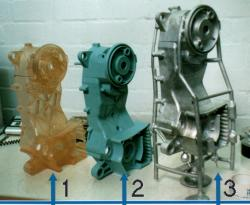1-
Otoinþa teknolojisiyle (SLA) üretilmiþ master model 2- Master model
ile yapýlan silikon kalýba dökülerek üretilmiþ 2.5kg'lýk
mum döküm modeli 3- Mum model kullanýlarak
dökülmüþ 7.2kg'lýk alüminyum krank gövdesi. Burada,
mum model üzerine döküm öncesi yerleþtirilmiþ döküm
ve havalandýrma kanallarý da açýkça görülmekte.
Not:
Farklý döküm teknolojileriyle ilgili daha fazla bilgi
ve video görüntüleri ÝTÜ Ýmalat Mühendisliði öðrencileri
tarafýndan hazýrlanan aþaðýdaki rapordan bulunabilir: www.mkn.itu.edu.tr/bolumler/imalat/baglanti/dokum
> DÖKÜM VE KALIPLAMA YÖNTEMLERÝ (Kum Kalýba Döküm,
Kalýcý Kalýplara Döküm, Hassas Döküm, Savurma Döküm, Alçý
Kalýba Döküm, Seramik Kalýba Döküm, Dolu Kalýba Döküm)